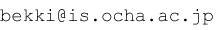

戸次研究室では、数理言語学(mathematical linguistics)／理論言語学(theoretical linguistics)／計算言語学(computational linguistics)と呼ばれる3分野を横断する研究をしています。 いずれも人間の言語を対象とした自然科学であり、数理モデルを用いて自然言語の（音声と意味の間にある）構造を解明する研究分野です。特に、理論の数理的な性質を対象とする分野が数理言語学、理論の経験的な帰結と検証を対象とする分野が理論言語学、理論の計算的な性質を実装を通して研究する分野が計算言語学と呼ばれています。戸次研究室では主に、組合せ範疇文法(Combinatory Categorial Grammar)、依存型意味論(Dependent Type Semantics)、ニューラル言語モデル(Neural language models)などの理論的枠組みを用いて、さまざまな言語現象を統一的に説明する理論と、その背後にある人間の言語機能の構造を追究しています。
LLM の実応用には検証・改善についての課題が存在しているが，本研究では言語学的パイプライン(LP)を媒介とする解決を提案する．第一に，LLM とLPそれぞれの自然言語理解における性能上限を探り，第二に，言語諸科学の専門家が操作可能であるLPが，LLM の推論の妥当性を検証し，報酬モデルを提供することで LLM を改善するフィードバックループを創出する．開発と運用においては言語諸科学の専門家が協働して臨む．
依存型理論に基づく自然言語の意味理論である「依存型意味論（DTS）」を用い，多様な言語現象を俯瞰的に分析しつつ，その妥当性を実装によって自動検証する手法の確立を目指す．DTSは長年の課題であった意味の動態と合成性の両立を可能にする．実装においては，日本語CCGパーザ，定理自動証明器，意味論テストセットJSeMを組み合わせ，文から推論成立の成否までを自動計算するパイプラインを構築し，理論の妥当性を定量的に検証する．
- 2026/3/8NLP2026＠宇都宮では「Q6:計算・形式言語学」3/11 (水) 11:15-12:45 で7件のポスター発表を予定しています。👉
- 2025/10/21LENLS21 (Nov.28-30, Nagoya) program is now available. Registration deadline is Oct.31 for conference dinner participants, and Nov.16 for general participants.👉
- 2025/9/30JST CREST「人と AI の共生・協働社会を実現する学際的システム基盤の創出」領域に応募していた研究課題が採択されました。「言語諸科学の協働による人・LLM間のフィードバック・ループ創出」戸次大介，主たる共同研究者：河原大輔（早大），松崎拓也（東京理科大），大関洋平（東大），谷中瞳（東大）👉
- 2025/11/10戸次研M1の宮川夏菜子さんが、人工知能学会2025年度全国大会学生奨励賞を受賞しました。「依存型理論のための自動定理証明器Neural Waniの開発に向けて」👉
A multi-lingual CCG parser with DTS theorem prover
Japanese semantic test suite (Japanese FraCaS and extensions)
